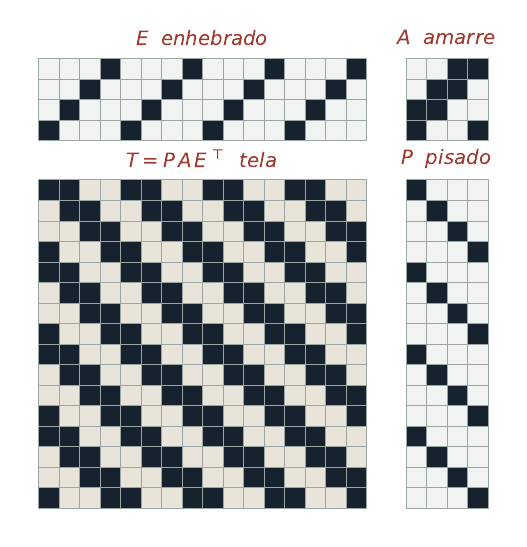

Editor de diseños para telar de pedal con marcos. Libre, en español y sin conexión.
El enhebrado, el amarre y el pisado se pintan arrastrando el cursor sobre la retícula; la tela se recalcula al instante y el programa reporta la longitud máxima de flotante. Todo el cálculo ocurre en tu equipo: no hay servidor, no hay cuenta y no se envía nada a ninguna parte.
Abrir el editorTambién puedes descargar el archivo y abrirlo con doble clic cuando no tengas internet. Es un solo HTML.

No resuelve el problema inverso (de una tela al mínimo de marcos y pedales), no verifica cohesión, no admite planes de levada ni más de dieciséis marcos, y no trae documentación para quien no sepa ya tejer. Son ausencias deliberadas que delimitan esta versión.
Tres matrices sobre el semianillo booleano determinan la tela por completo: el enhebrado E,
el amarre A y el pisado P. La tela es su producto, T = P A Eᵀ, donde
Tji = 1 indica que el hilo i queda encima en la pasada j.
El detalle completo está en el README.
Aguirre-Guerrero, D. (2026). Telar: editor de diseños para telar de pedal (versión 1.0) [Software]. Zenodo. https://doi.org/10.5281/zenodo.22683228